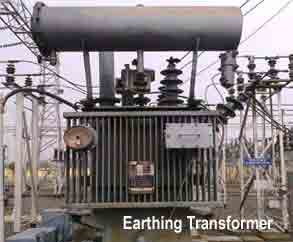

Stability on External Earth Fault(E/F) on Delta Side of Star-Delta Power Transformer
If the earthing transformer on the Delta Side is outsides the Zone of protection the Earth Fault(E/F)in the delta system outside Current Transformer(CT) locations would produce electric current distributions as shown which circulate within the differential CT secondaries and is kept out of operating coils.
Zig-Zag or inter connected star grounding transformer has normal magnetising impedance of high value but for E/F, currents flow in windings of the same - core in such a manner that the ampere turn cancel and hence offer lower impedance.
In cases where the neutral point of three phase system is not accessible like the system connected to the delta connected side of a electrical power transformer, an artificial neutral point may be created with help of a zigzag connected earthing transformer.
This is a core type transformer with three limbs. Every phase winding in zigzag connection is divided into two equal halves. One half of which is wound on one limb and other half is wound on another limb of the core of transformer.
1st half of Red phase winding is wound on the 1st limb of the core and 2nd half of same Red phase is wound on 3rd limb.
1st half of Yellow phase winding is wound on the 2nd limb of the core and 2nd half of same Yellow phase is wound on 1st limb.
1st half of Blue phase winding is wound on the 3rd limb of the core and 2nd half of same Blue phase is wound on 2nd limb.
End point of all three winding ultimately connected together and forms a common neutral point. Now if any fault occurs at any of the phases in delta connected system, the zero sequence fault electric current has close path of circulating through earth as shown in the figure.
In normal condition of the system, the voltage across the winding of the earthing transformer is 1/√3 times of rated per phase voltage of the system. But when single line to ground fault occurs on any phase of the system, as shown in the figure, zero sequence component of the earth fault electric current flows in the earth and returns to the electrical power system by way of earth star point of the earthing transformer. It gets divided equally in all the three phases. Hence, as shown in the figure, the currents in the two different halves of two windings in the same limb of the core flow in opposite directions.
 And therefore the magnetic flux set up by these two currents will oppose and neutralize each other. As there is no increase in flux due to fault current, there is no change of dφ/dt means no choking effect occurs to impede the flow of fault current. So it can be concluded like that, the zigzag type earthing or grounding transformer maintains the rated supply voltage at normal electric current as well as when a solid single line to ground fault electric current flows through it.
The rated voltage of an earthing or grounding transformer is the line to line voltage on which it is intended to be used. Current rating of this transformer is the maximum neutral electric current in Amperes that the transformer is designed to carry in fault condition for a specific time. Generally the time interval, for which transformer designed to carry the maximum fault electric current through it safely, is taken as 30 second.
 by
by